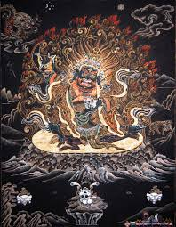

Просветлённое существо, гневная форма защитника Учения Будды в буддизме Ваджраяны. У буддистов Тибета Махакала считается гневным аспектом Авалокитешвары.
Изображается Махакала под стать своему характеру – угрожающе. Он обвешан украшениями из костей, черепов и змей, в юбке из тигровой шкуры, с выступающим животом, в окружении диких животных, за спиной полыхает пламя. Ноздри его раздуты. Он решительно сокрушает все преграды на пути к просветлению.
На голове Махакалы корона из пяти черепов. Черепа обозначают преображение пяти клеш (невежество, страсть, гнев, гордость, зависть) в пять изначальных мудростей - зеркалоподобная мудрость, мудрость равностности, различающая мудрость, всесовершающая мудрость, интуитивная, или всепронизывающая мудрость.
Ещё одна функция Махакалы – защита жилища, дома, территории. Поэтому очень часто статуэтки его покупают именно с этой целью.